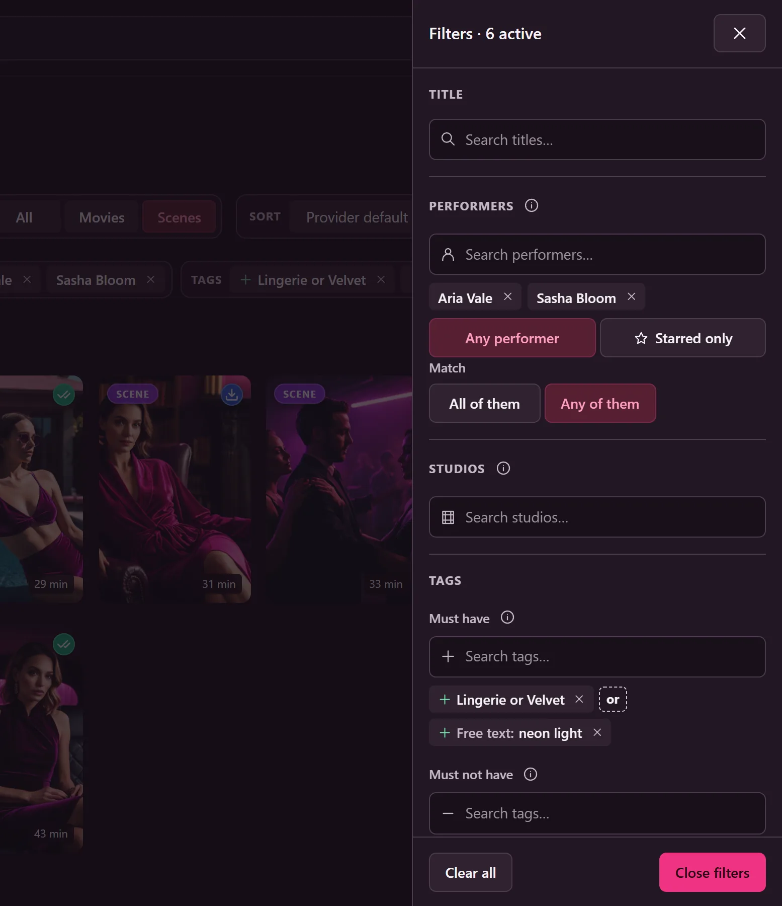
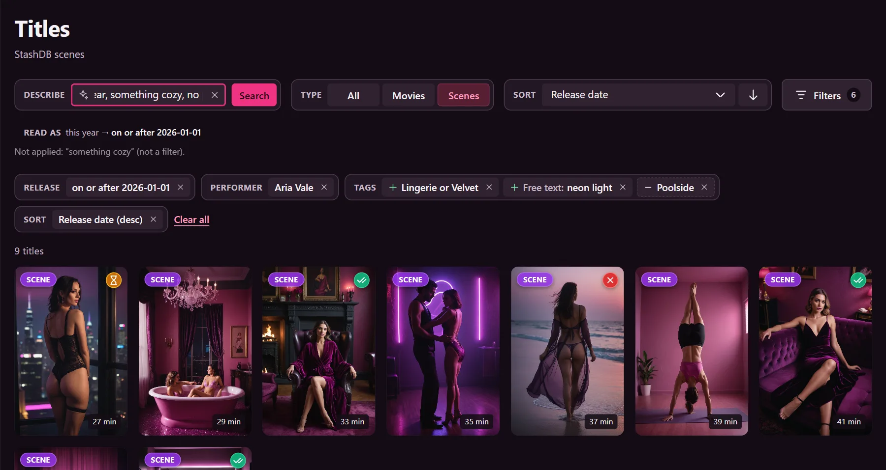
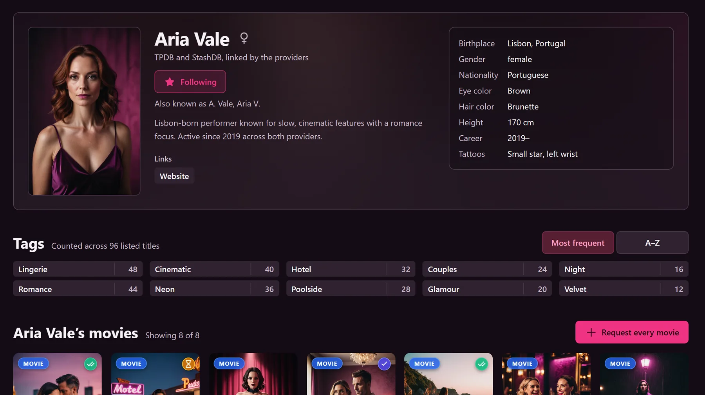
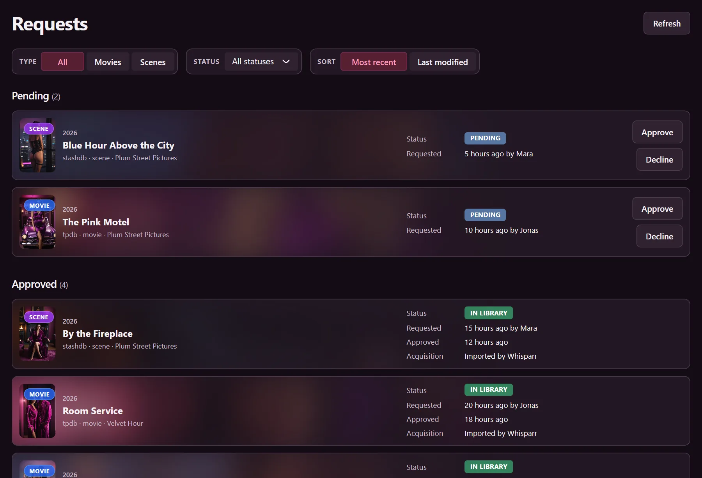
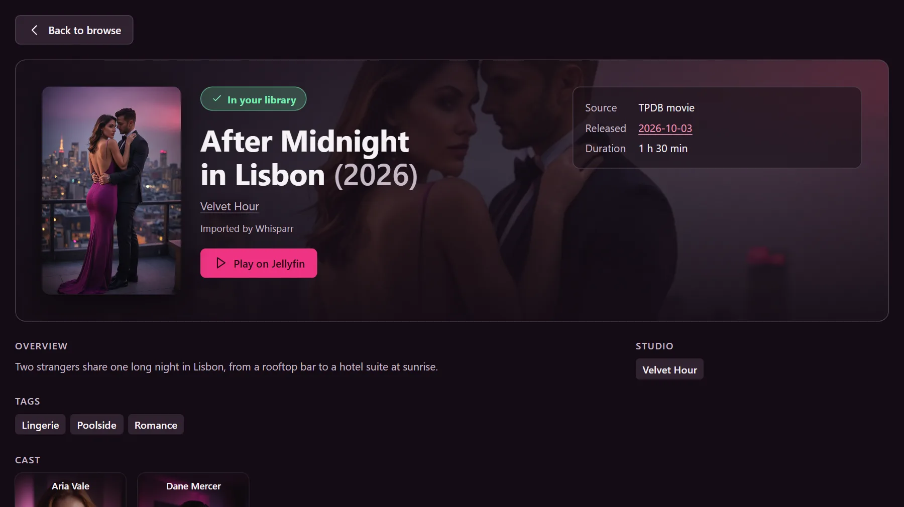

Velvarr runs on your own server. Browse new adult movies and scenes from TPDB and StashDB, and request what you want. Velvarr hands each request to Whisparr, and when the title is in your library, you watch it in Jellyfin.
No real people on this pageAI made every picture, including the woman behind the headline. The screenshots show the real app with made-up titles and names.
Browse
Search by tag, performer, studio and date
Pick the tags you want and hide the ones you never want to see. Add a few words of your own, one or more performers, a studio, or a range of release dates. Every search has its own link, so you can bookmark it or send it to someone.
tags you want
tags you hide
any or all performers
release date ranges
bookmarkable searches

AI-assisted search (optional)
Search in plain words
Type a sentence like "poolside scenes from this year". A language model turns it into filters. Velvarr checks each tag, performer and studio against TPDB and StashDB, and tells you which parts of your sentence it could not use. Connect any OpenAI-compatible server, on your own machine or hosted.
names checked against TPDB and StashDB
shows what it skipped
dates like "this year"
any OpenAI-compatible server

Performers
Everything about a performer on one page
The bio, other names and links are at the top, then the most common tags and every movie and scene. When TPDB and StashDB link their entries for the same person, Velvarr shows one page for both. Follow a performer, and their new releases show on your Discover page.
bio and other names
TPDB and StashDB on one page
most common tags
movies and scenes
follow for new releases

Requests
Members request, you approve
The people you share your server with can request titles. You or a moderator approve them, or you turn on auto-approval for people you trust. Velvarr sends each approved request to Whisparr and shows its real status: waiting, approved, in progress, or ready to watch. Nobody has to ask you where a title is.
requests from members
approval by you or a moderator
auto-approval
sent to Whisparr
live status

Watch
Play it in Jellyfin
When a title is in your library, its page shows the file details and a Play on Jellyfin button. Everyone signs in with their own Jellyfin account and sees only the libraries that you share with them.
your Jellyfin accounts
libraries per person
file details

AI-assisted matching (optional)
Smarter library matching
When a title in your library has a slightly different name than the one you requested, AI spots the likely match and flags it for you to review. It never marks a title as available on its own. It also sorts similar titles and suggests real tags while you search.